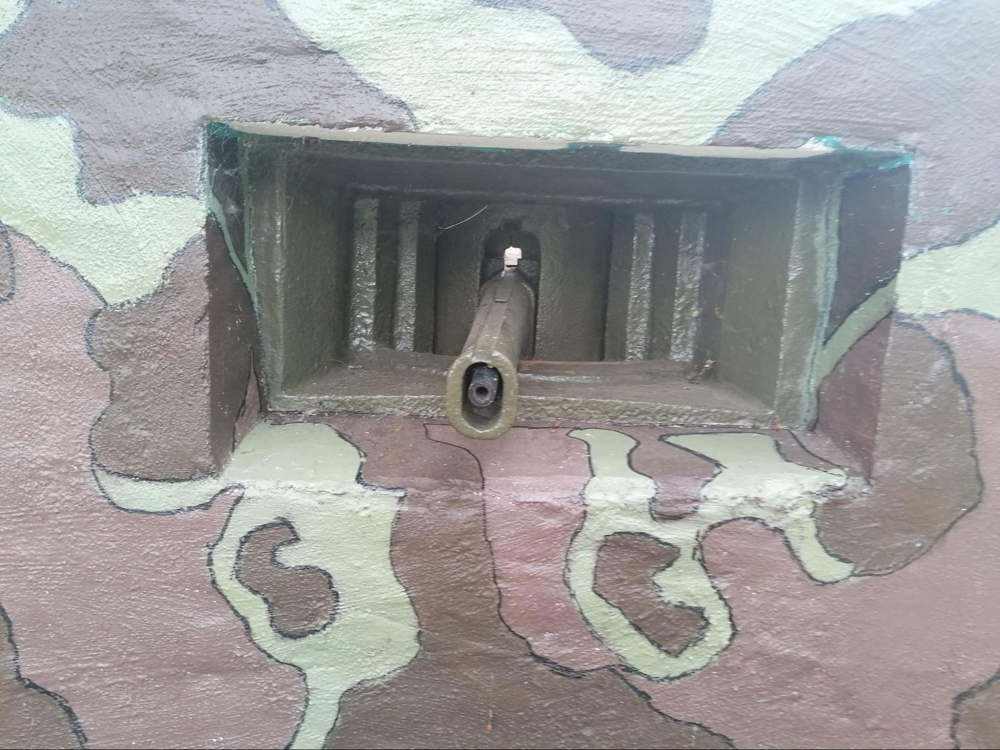
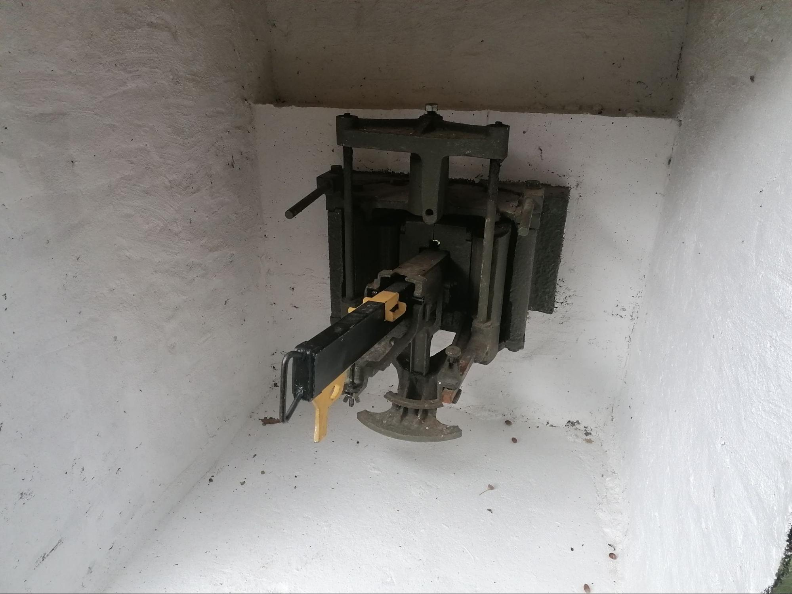

La trémie type Lille est un dispositif de cuirassement développé à la fin des années 1930 par la Direction des Travaux du Génie de la 1ère Région Militaire, dans le secteur de Lille. Elle a été conçue afin d’équiper certains blockhaus de type STG construits entre 1937 et 1938, notamment dans les secteurs du Mont-Noir et de Maulde. Ce système répond à un besoin local d’adaptation des embrasures de tir pour les mitrailleuses Hotchkiss 8 mm modèle 1914, en l’absence de directives techniques précises venant des services centraux du Génie.
Cette trémie constitue donc une initiative régionale, développée indépendamment pour résoudre un problème concret : la protection des ouvertures de tir des blockhaus. Elle remplace une embrasure classique par un ensemble blindé plus élaboré, destiné à réduire la vulnérabilité de l’arme et de son servant face aux tirs directs ennemis et aux éclats d’obus. L’objectif principal était d’améliorer la survie des positions fortifiées tout en conservant une capacité de tir efficace.
Sur le plan technique, la trémie type Lille se distingue par son système de support articulé de la mitrailleuse Hotchkiss. Contrairement à d’autres modèles de trémies plus standardisés, elle repose sur un dispositif spécifique intégrant une pièce cylindrique mobile montée sur suspension élastique.
Ce système permet au carter blindé de l’arme d’effectuer de légers mouvements en hausse dans l’embrasure, tout en restant protégé. Cette conception diffère notamment des systèmes à rotule sphérique employés dans d’autres modèles, où le manchon blindé entoure complètement l’arme.
L’un des éléments essentiels de cette trémie est son champ de tir horizontal, qui atteint environ 60 degrés. Cette amplitude permettait une couverture efficace du terrain environnant, tout en maintenant une ouverture relativement réduite dans la façade du blockhaus, limitant ainsi les points faibles structurels.
Les essais ayant donné satisfaction, ce modèle a ensuite été conservé et installé dans plusieurs blockhaus de la région des Flandres et de l’Escaut.
D’un point de vue historique, cette trémie illustre parfaitement la capacité d’adaptation des ingénieurs militaires locaux face aux contraintes opérationnelles. Faute de standardisation immédiate, la 1ère Région Militaire a su développer une solution efficace, ensuite testée officiellement lors d’essais balistiques à Bourges en 1939.
Ces essais comparatifs ont permis de situer ses performances face à d’autres modèles de cuirassements, confirmant son intérêt pour les ouvrages déjà construits.

Trémie type Lille installée dans un blockhaus STG (région des Flandres).

Détail du système articulé de la mitrailleuse Hotchkiss 1914.